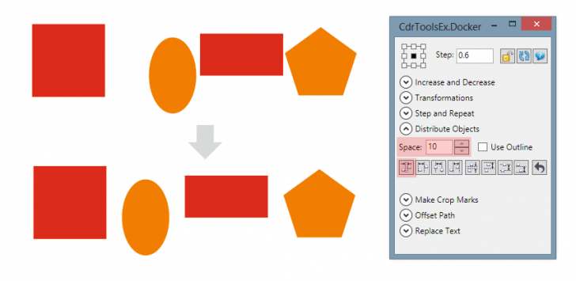

Как распределить объекты с определённым интервалом?
tsvigo / 08.12.2013, 00:49
Форум:
Версия программы:
16.0.0.707
В программе Corel Draw есть файл с линейкой. Как сделать чтобы между её делениями было определённое количество миллиметров?
В программе Corel Draw есть файл с линейкой. Как сделать чтобы между её делениями было определённое количество миллиметров?
Например макрос CdrToolsEx (платный)
